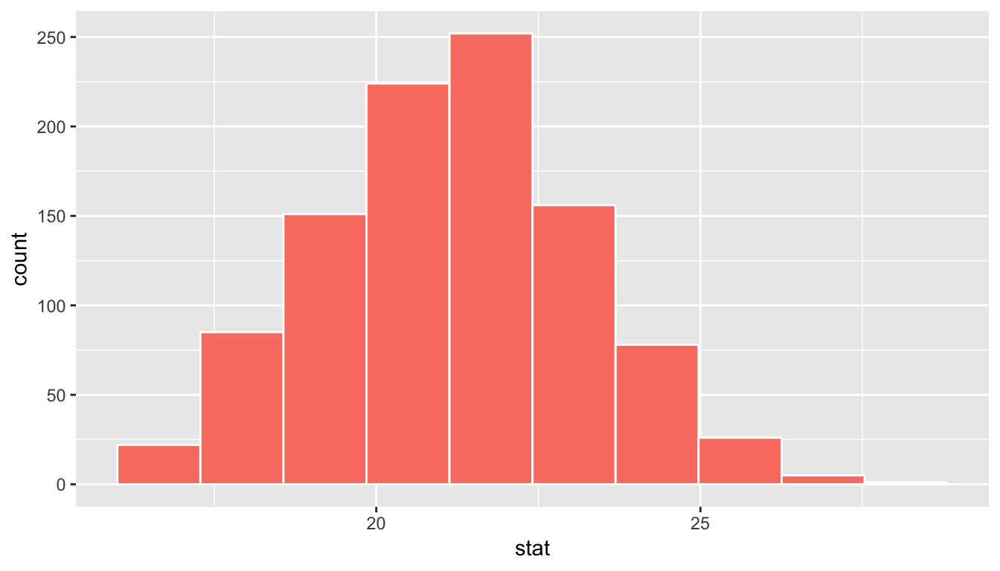
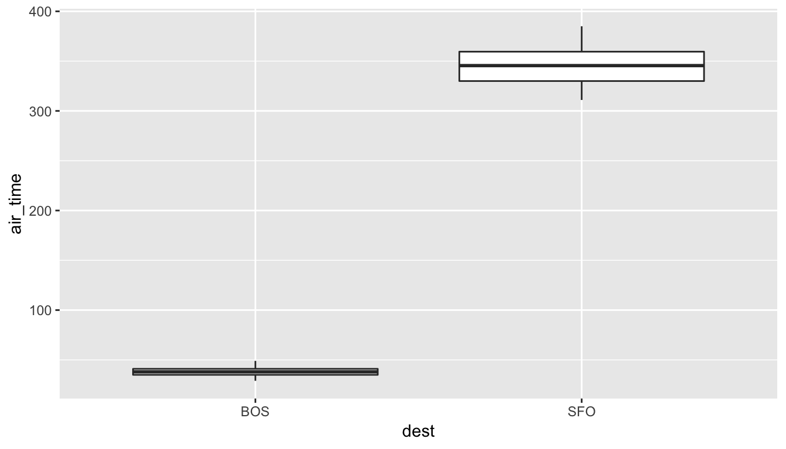

Chapter 9 Confidence Intervals
In preparation for our first print edition to be published by CRC Press in Fall 2019, we’re remodeling this chapter a bit. Don’t expect major changes in content, but rather only minor changes in presentation. Our remodeling will be complete and available online at ModernDive.com by early Summer 2019!
In Chapter 8, we studied sampling. As an example we wanted to know the proportion of balls in the sampling bowl in Figure 8.1 that were red. While we could have performed an exhaustive count, this would have been a very tedious process. So instead we used a shovel to extract a sample of 50 balls. We then used the proportion of the shovel’s balls that were red as an estimate of the proportion of the bowl’s balls that are red. This sampling procedure was much less tedious than an exhuaustive count. Furthermore, we made sure to mix the bowl’s contents before using the shovel. However, because of the inherent randomness of the sampling induced by the mixing of the bowl, different shovel uses yielded different estimates of the proportion of the bowl’s balls that were red.
We then mimicked this “tactile” exercise with an equivalent “virtual” exercise done on the computer. Using our computers’ random number generator, we could very quickly repeat the above sampling procedure a large number of times. In Section 8.2.4, we quickly repeated the above sampling procedure 1000 times using three different “virtual” shovels, with 25, 50, and 1000 slots. We compared the variation of these three sets of 1000 estimates in the three histograms in Figure 8.13.
What we did here was construct sampling distributions. The motivation for taking repeated samples and visualizing the resulting estimates was to understand the variability of our estimates from one sample to another; in other words the effect of sampling variation. We quantified the variation of our estimates via their standard deviation, which has a very special name: the standard error. In particular, we saw that as the sample size increased, the standard error decreased and the sampling distributions narrowed. In other words, larger samples lead to more precise estimates.
Let’s rephase the description of our sampling procedure using the terminology and mathematical notation related to sampling we introducted in Section 8.3.1: Our study population was the large bowl with \(N\) = 2400 balls, while the population parameter (the unknown quantity of interest) was the population proportion \(p\) of the bowl’s balls that are red. Since performing a census was expensive in terms of time and energy, we extracted a sample of size \(n\) = 50. The point estimate (AKA the sample statistic) used to estimate \(p\) was the sample proportion \(\widehat{p}\) of the 50 balls that were red. Futhermore, since the sample was obtained at random, it was representative of the population, and thus our estimate \(\widehat{p}\) was unbiased and could be generalized to the population. In other words, the sample proportion \(\widehat{p}\) of the shovel’s \(n\) = 50 balls that were red was a “good guess” of the true population proportion \(p\) of the bowl’s \(N\) = 2400 balls that are red.
In particular, we emphasize that we used the point estimate/sample statistic, here the sample proportion \(\widehat{p}\), to estimate the unknown value of the population parameter, here the population proportion \(p\). In other words, we used the sample to infer about the population.
However, as we described in Section 8.2, both these tactile and virtual exercises were simulations used to study the effects of sampling variation and not real-life scenarios. In a real life situation, we would not take 1000 samples of size \(n\), but rather take only one sample that’s as large as possible. Additionally, in a real life scenario, we will not know what the true population proportion is like we did with our bowl. Because if we did, then why would we be estimating it via sampling? An example of a realistic sampling situation is the article on the Obama poll you saw in Section 8.4 where pollsters wanted to know the proportion of all young Americans who supported President Obama based on a sample of size \(n\) = 2089.
So what does one do in real life, when you only have one sample to work with? In other words, how can we comment on the effects of sampling variation when not in a simulation scenario? One common way is via a process known as bootstrapping resampling, which will be the focus of the earlier sections of this chapter. Furthermore, what if instead of a single estimate, we would like to give a range of highly plausible values of the unknown population parameter? Going back to the article, it stated that the pollsters’ estimate of the proportion of all young Americans who supported President Obama was 41%, but also that the poll’s “margin of error was plus or minus 2.1 percentage points.” In other words this “plausible range” was [41% - 2.1%, 41% + 2.1%] = [37.9%, 43.1%]. This range of plausible values is known as a confidence interval and will be the focus of the later sections.
Needed packages
Let’s load all the packages needed for this chapter (this assumes you’ve already installed them). Recall from our discussion in Section 5.4.1 that loading the tidyverse package by running library(tidyverse) loads the following commonly used data science packages all at once:
ggplot2for data visualizationdplyrfor data wranglingtidyrfor converting data to “tidy” formatreadrfor importing spreadsheet data into R- As well as the more advanced
purrr,tibble,stringr, andforcatspackages
If needed, read Section 2.3 for information on how to install and load R packages.
library(tidyverse)
library(moderndive)
library(infer)
library(janitor)9.1 Resampling activity
As we did in Chapter 8, we’ll begin with a hands-on activity.
9.1.1 What is the average year of circulated US pennies in 2019?
In order to begin to answer this question, we obtained a sample of 50 US pennies collected from a bank in the US.


FIGURE 9.1: Collecting a sample of 50 pennies.
An image of these pennies is below.

FIGURE 9.2: 50 US pennies
Each of the pennies was numbered as 1-50 starting in the top left and ending in the bottom right progressing row by row. This is shown with the “ID” values on top of and near the middle of each penny for clarity. The year of mint is also shown on top of and to the right side of the penny as well.


FIGURE 9.3: 50 US pennies labelled
The moderndive package contains this data on the pennies collected and minted in the United States in 2019. Let’s explore this sample data first:
pennies_sample_2# A tibble: 50 x 2
ID year
<int> <int>
1 1 2002
2 2 1986
3 3 2017
4 4 1988
5 5 2008
6 6 1983
7 7 2008
8 8 1996
9 9 2004
10 10 2000
# … with 40 more rowsThe pennies_sample_2 data frame has rows corresponding to a single penny with two variables:
IDof the penny stored as an integer to identify the penny from other pennies in the sample andyearof minting as shown on the penny and stored as an integer.
Suppose we are interested in understanding some properties of the mean year of all US pennies using this data on 50 pennies collected in 2019. How might we go about that? Let’s begin by understanding some of the properties of pennies_sample_2 using data visualization from Chapter 3 and data wrangling from Chapter 4.
Exploratory data analysis on original sample
First, let’s visualize the values in this sample as a histogram:
ggplot(pennies_sample_2, aes(x = year)) +
geom_histogram(binwidth = 10, color = "white")
We see a skewed distribution here that has many values in the 1990s through 2010s with only a few older than 1970. If pennies_sample_2 is a representative sample from the population, we’d expect the age of all US pennies collected in 2019 to have a similar shape, a similar spread, and similar measures of central tendency like the mean.
So where does the mean value fall for this sample? This point will be known as our point estimate and provides us with a single number that could serve as the guess to what the true population mean year might be. Recall how to find this using the dplyr package:
x_bar <- pennies_sample_2 %>%
summarize(stat = mean(year))We’ve denoted this sample mean as \(\bar{x}\), which is the standard symbol for denoting the mean of a sample. Our point estimate is, thus, \(\bar{x} = 1995.44\). Note that this is just one sample though providing just one guess at the population mean. What if we’d like to have another guess?
This should all sound similar to what we did in Chapter 8. There instead of collecting just a single scoop of balls, we had many different students use the shovel to scoop different samples of red and white balls. We then calculated a sample statistic (the sample proportion) from each sample. But, we don’t have a population to pull from here with the pennies. We only have this one sample.
The process of resampling allows us to use a single sample to generate many different samples that will act as our way of approximating a sampling distribution. Let’s see how this works using our sample of fifty pennies.
9.1.2 Using resampling once
The fifty pennies represent one possible sample from all of the pennies in our population. As we saw in Chapter 8, there are other potential samples that could have been selected. All we know about the population is that it contains pennies with years equal to those in our sample. In our sample, we drew three pennies with a year of 1999. But will we always draw exactly three pennies with a year of 1999 if we drew other samples of size 50? More than likely not. We might draw 0, 1, 2, or even all 50 pennies as being from 1999. The same can be said for the other 26 years that are represented in our sample.
Taking our sample of fifty pennies, we can perform a resampling process to obtain another potential sample from the population. This will help us get a sense for the variability in another sample like what we did in Chapter 8. Here’s the process:
- First, pretend that each of the 50 values of
yearinpennies_sample_2was written on a small piece of paper. Recall that these values were 2002, 1986, 2017, 1988, 2008, etc. We also note theIDvalues here on each sheet of paper of 1, 2, 3, 4, 5, etc. to keep track of how resampling works. - Now, put the 50 small pieces of paper into a receptacle such as a baseball cap.
- Shake up the pieces of paper.
- Draw “at random” from the cap to select one piece of paper.
- Write down the value of
ageandIDon this piece of paper. Say that it is 1976 foryearand 32 forID. - Now, place this piece of paper corresponding to the 32nd coin with a value of 1976 back into the cap.
- Draw “at random” again from the cap to select a piece of paper. Note that this is the sampling with replacement part since you may draw this 39th coin again.
- Repeat this process until you have drawn 50 pieces of paper and written down the
IDandyearvalues for these 50 pieces of paper. Completing this repetition produces ONE resample.
Let’s enter these values into R in a tibble called pennies_resample and observe the first ten rows of this resample.
# A tibble: 50 x 2
ID year
<int> <int>
1 32 1976
2 37 1962
3 22 1976
4 6 1983
5 24 2017
6 39 2015
7 16 2015
8 37 1962
9 17 2016
10 32 1976
# … with 40 more rowsNow we can view what the actual pennies sampled would look like corresponding to this resample:
FIGURE 9.4: 50 resampled US pennies labelled
Note the different ID values and year values for each penny here. There are also some pennies drawn multiple times and some pennies not drawn at all from our original sample.
Exploratory data analysis on the resample
Let’s look at the distribution of years in the original sample of pennies_sample_2 compared to the resample of pennies_resample:
ggplot(pennies_sample_2, aes(x = year)) +
geom_histogram(binwidth = 10, color = "white") +
labs(title = "50 US pennies labelled")
ggplot(pennies_resample, aes(x = year)) +
geom_histogram(binwidth = 10, color = "white") +
labs(title = "50 resampled US pennies labelled")
FIGURE 9.5: Comparing years of original sample pennies_sample_2 and resample pennies_resample
Note the similarities and differences between these two distributions. The general shape of the two distributions is similar. This won’t always be the case for all resamples since there is some chance that values that don’t appear frequently in the original sample won’t be drawn in the resample. Note also that the range of possible values taken on for the years is the same as what was seen in pennies_sample_2. In other words, we don’t see any years such as 1948 or 1952 in the pennies_resample data. This will always be the case with resamples since they are, by their name, sampling again from the original sample.
So where does the mean of the year variable for this resample of pennies_resample fall? Any guesses? Let’s have dplyr help us out here:
resample_mean <- pennies_resample %>%
summarize(stat = mean(year))The value of the resampled mean is 1994.82. We might have guessed that our mean here is similar to what we saw for the mean of pennies_sample_2 of 1995.44 based on the distributions in the histogram in Figure 9.5.
What if we repeated several times this exercise of resampling 50 times from our sample of pennies? Would we obtain the same mean year value each time? In other words, would our guess at the mean year of all pennies in the US in 2019 be exactly 1994.82 every time? This should remind you of what we did in Chapter 8. Let’s do some more resamplings and observe the results with the help of 33 friends again.
9.1.3 Using resampling 33 times
Each of our 33 friends will do the following:
- Each takes 50 sheets of paper that show the different
IDandyearpairings from thepennies_sample_2original sample. - Then, each puts the 50 small pieces of paper into something like a baseball cap.
- Shake up the pieces of paper.
- Draw “at random” from the cap to select one piece of paper.
- Write down the value of
ageandIDon this piece of paper. - Next, place this piece of paper just drawn back into the cap to have 50 small pieces of paper again.
- Draw “at random” again from the cap to select a piece of paper.
- Repeat this process until each of your friends have drawn 50 pieces of paper and each has written down the
IDandyearvalues for these 50 pieces of paper.
Now each of your 33 friends has a resample of penny ID and year pairings. You now ask your friends to each compute the mean of the year values for each of their resamples. Using a similar strategy to what was done in Chapter 8, we build out our histogram manually:

FIGURE 9.6: Constructing a histogram of means from resamples.
Observe the following about the histogram in Figure 9.6:
- Only one of your friends has a mean year between 1991 and 1992.
- On the other side of the distribution, only one of your friends has a mean year between 1999 and 2000.
- The most frequently occurring range is between 1995 and 1996 with 8 entries, but 1992 to 1993, 1993 to 1994, and 1996 to 1997 each have 6 entries.
- The distribution is starting to show a bit of normality, but that might be a stretch to guess at with this small of a sample size.
The different mean values reported by your 33 friends are stored in the tactile_sample_means tibble shown below.
tactile_resample_means
View(tactile_resample_means)Let’s display only the first 10 out of 33 rows of tactile_resample_means’s contents in Table ??.
Recall the replicate column here similar to the one shown in Chapter 8 enumerating each of the 33 groups. This again corresponds to each row being viewed as one instance of a replicated activity. The activity here is the sampling with replacement from the original sample 50 times to create a resample.
The distribution of the 33 means of these resamples is given using geom_histogram() with binwidth = 1 in Figure 9.7. As with the similar plot from Chapter 8 for the proportion of red balls, this computer-generated histogram matches our hand-drawn histogram from the earlier Figure 9.6.
ggplot(tactile_resample_means, mapping = aes(x = stat)) +
geom_histogram(binwidth = 1, color = "white", boundary = 1990) +
scale_x_continuous(breaks = seq(1990, 2000, 2))
FIGURE 9.7: Distribution of 33 means based on 33 resamples of size 50
9.1.4 What’s the plan?
We’ve just gone over how to use the technique of resampling to make a guess as to what the variability would look like if we were to take samples from a population. Thus, in essence, the resampling distribution would be an approximation of the sampling distribution discussed in Chapter 8. We saw that we obtained many different means from these resamples and began to see the underpinnings of the normal distribution take shape in the first 33 resamples made by our friends.
In Section 9.2 we’ll use computer simulation to imitate the hands-on resampling activity conducted here. We can use a computer to do the resampling many more times than just having our friends do this for us. This will allow us to better understand the distribution of means from many different resamples. Following these simulations, in Section 9.3 we’ll explicitly articulate our goals for this chapter: understanding the concept of resampling variation, defining the statistical idea of a confidence interval by building on our pennies example, and discussing how confidence intervals can be interpreted.
Following this framework on confidence intervals, we’ll discuss the dplyr and infer package code needed to complete the process of bootstrapping, which is another name for this resampling approach that is most commonly found in developing confidence intervals. We’ve used one of the functions in the infer package already with rep_sample_n(), but there’s a lot more to this package than just that. We’ll introduce the tidy statistical inference framework that was the motivation for the infer package pipeline that will be the driving package throughout the rest of this book.
As we did in Chapter 8, we’ll tie these ideas together with a case study in Section 9.7. Here we will be analyzing an experiment done about yawning on the US television show Mythbusters. The chapter concludes with a comparison of a sampling distribution and a bootstrap distribution using the balls data from Chapter 8. We’ll also discuss briefly the normal distribution and how these traditionally taught theoretical results tie in with the methods developed throughout the chapter.
9.2 Computer simulation of resampling
We’ve completed a tactile example of resampling. We’ll next explore how this can be done virtually using the computer.
9.2.1 Using the virtual resample once
Recall that pennies_sample_2 is stored as a dataset in the moderndive package. We’ve used the rep_sample_n() function in Chapter 8 to take samples from a population using replace = FALSE as the default. If we change this to replace = TRUE, we can also use this function to resample from a given original sample. Let’s try this out:
virtual_resample <- pennies_sample_2 %>%
rep_sample_n(size = 50, replace = TRUE, reps = 1)Note here that the size argument should always be the same as the original sample size. We are doing this resampling one time and, thus, reps = 1. So what does virtual_resample look like?
View(virtual_resample)We’ll display only the first 10 out of 50 rows of virtual_shovel’s contents in Table ??.
The ID variable identifies which of the pennies from pennies_sample_2 are included in our resample of 50 coins and year denotes the year minted on the penny. The replicate column here is always the value of 1 corresponding to us only having reps = 1. It will take values between 1 and 33 next. But before we get to resampling multiple times, let’s compute the mean year in our virtual resample of size 50 using dplyr.
virtual_resample %>%
summarize(resample_mean = mean(year))# A tibble: 1 x 2
replicate resample_mean
<int> <dbl>
1 1 1995.48Note that tibbles will try to print as pretty as possible which may result in numbers being rounded. In this chapter, we have set the default number of values to be printed to six in tibbles with options(pillar.sigfig = 6).
9.2.2 Using the virtual resample 33 times
Let’s now extend this to have 33 virtual friends help us understand the variability in the means from 33 resamples of size 50.
virtual_resamples <- pennies_sample_2 %>%
rep_sample_n(size = 50, replace = TRUE, reps = 33)
View(virtual_resamples)Just as we did with virtual_resample, we’ll take the tibble virtual_resamples with 33 \(\times\) 50 = 1650 rows corresponding to 33 resamples of size 50 pennies and then compute the resulting 33 means. We’ll use the same dplyr verb as we did in the previous section, but compute the mean for each of our virtual friends:
virtual_resample_means <- virtual_resamples %>%
group_by(replicate) %>%
summarize(stat = mean(year))
View(virtual_resample_means)By looking at these first 10 rows, we can see values in the same range as those obtained from our friends’ resamples in Table ??. Let’s next visualize these 33 means:
ggplot(virtual_resample_means, aes(x = stat)) +
geom_histogram(binwidth = 1, color = "white", boundary = 1990) +
scale_x_continuous(breaks = seq(1990, 2000, 2))
Let’s next compare the two distributions of the tactile resampling done by friends and the virtual resampling done by the computer:

FIGURE 9.8: Comparing distributions of means from resamples`
9.2.3 Using the virtual resample 1000 times
Remember that one of the goal of resampling is to get an estimate for what the sampling distribution of the statistic of interest, the mean year here, looks like. To do so we’ll need lots of different replicates to better understand the shape and the variability from one resample to the next. Let’s extend our 33 replicates above to look at 1000 instead. With our goal being to get to 1000 resample means, we can use the %>% to get us there in one chain:
virtual_resample_means <- pennies_sample_2 %>%
rep_sample_n(size = 50, replace = TRUE, reps = 1000) %>%
group_by(replicate) %>%
summarize(stat = mean(year))Let’s next look at what this distribution of 1000 sample means from 1000 resamples looks like in Figure 9.9:

FIGURE 9.9: Bootstrap resampling distribution based on 1000 resamples.
Note here the bell shape starting to become more apparent. We now have a general sense for the range of values that the mean may take on in these resamples from this histogram. Do you have a guess as to where this histogram is centered? With it being close to symmetric, either the mean or the median would serve as a good estimate for the center here. Let’s look at the mean:
virtual_resample_means %>%
summarize(mean_of_means = mean(stat))The mean of the 1000 means from 1000 resamples is 1995.441. Note that this is quite close to the mean of our original sample: 1995.44. This will always be the case when we have 1000 or so replicates since each of the resamples is based on the original sample.
9.3 Confidence interval build-up
Definition: Confidence Interval
A confidence interval (CI) gives a range of plausible values for a parameter. It depends on a specified confidence level with higher confidence levels corresponding to wider confidence intervals and lower confidence levels corresponding to narrower confidence intervals. Common confidence levels include 90%, 95%, and 99%.
Usually, we don’t just begin sections with a definition, but confidence intervals are simple to define and play an important role in the sciences and any field that uses data. We’ve also just shown the build-up to them visually in the previous section.
You can think of a confidence interval as playing the role of a net when fishing. Instead of just trying to catch a fish with a single spear (estimating an unknown parameter by using a single point estimate/sample statistic), we can use a net to try to provide a range of possible locations for the fish (use a range of possible values based around our statistic to make a plausible guess as to the location of the parameter).
| Point estimate/sample statistic | Confidence interval |
|---|---|
 |
 |
The resampling process will provide statistics that have a distribution with center at (or extremely close to) the mean of the original sample. The distribution of statistics brought forth by resampling, also called the resampling distribution provides us a guess as to what the variability in different sample means may look like only using the original sample as our guide. We can quantify this variability in the form of a 95% confidence interval in a couple of different ways.
9.3.1 The percentile method
Recall that the actual mean year for all pennies in circulation in the US is unknown to us. But by finding a confidence interval we have a way to make an educated guess as to what a range of plausible values is for the unknown parameter. One way to calculate this range is to use the middle 95% of the virtual_resample_means to determine our endpoints. Our endpoints are thus at the 2.5th and 97.5th percentiles. We can visualize these percentiles on our distribution with green vertical lines:

Using the percentile method, our range of plausible values for the mean age of US pennies in circulation in 2011 is 1991.339 years to 1999.401 years. You’ll see in later sections how to compute these values.
You can see that 95% of the data stored in the stat variable in virtual_resample_means falls between the two endpoints with 2.5% to the left outside of the shading and 2.5% to the right outside of the shading. The cut-off points that provide our range are shown with the green lines.
9.3.2 The standard error method
If the resampling distribution is close to symmetric and bell-shaped, we can also use a shortcut formula for determining the lower and upper endpoints of the confidence interval. This is done by using the formula \(\bar{x} \pm (multiplier * SE),\) where \(\bar{x}\) is our original sample mean and \(SE\) stands for standard error and corresponds to the standard deviation of the resampling distribution. The value of \(multiplier\) here is the appropriate percentile of the standard normal distribution. We’ll go into this further in Section 9.8.
Definition: standard error
The standard error is the standard deviation of the sampling distribution.
The variability of the sampling distribution may be approximated by the variability of the resampling distribution. Traditional theory-based methodologies for inference also have formulas for standard errors, assuming some conditions are met.
Let’s next see how the lower and upper values of the confidence interval compare across the two methods of “percentile” and “standard error.”

We see that both methods produce nearly identical confidence intervals with the percentile method being \([1991.34, 1999.4]\) and the standard error method being \([1991.28, 1999.6]\). This is to be expected since the resampling distribution is roughly bell-shaped. Now that you’ve seen how these methods work, let’s dig into the formalities of the process and the code needed to calculate them.
9.4 The bootstrapping framework
The way in which we used resamples to get a range of plausible for an unknown parameter is known as bootstrapping. To better understand this term, we harken back to the idea of pulling oneself up by their bootstraps. To “pull oneself up by their bootstraps” means to “succeed only by one’s own efforts or abilities.” From a statistical perspective, we have pulled ourselves up from our bootstraps using a single sample (pennies_sample_2) to get an idea of the grander sampling distribution. Thus, we’ve used only the “effort” of the single original sample to approximate a larger goal of the variability in the sampling distribution.
Bootstrapping uses a process of sampling with replacement from our original sample to create new bootstrap samples of the same size as our original sample. We can again make use of the rep_sample_n() function to explore what one such bootstrap sample would look like. Remember that we are randomly sampling from the original sample here with replacement and that we always use the same sample size for the bootstrap samples as the size of the original sample (pennies_sample_2).
9.4.1 The original workflow needed for this
We saw earlier in Section 9.2 how to develop these bootstrap samples, bootstrap statistics, and the resulting bootstrap distribution. We called this bootstrap distribution the resampling distribution before to drill home the idea of this being based on resampling (sampling with replacement) instead of sampling without replacement as seen in Chapter 8. Let’s revisit the flow using the %>% but this time call it bootstrap_distribution.
First, we repeatedly (reps = 1000) sampled with replacement (replace = TRUE) from the original sample with the same size of the resample (size = 50) using the rep_sample_n() function in the infer package:
pennies_sample_2 %>%
rep_sample_n(size = 50, replace = TRUE, reps = 1000)Next, since we are looking to get the mean value for year across each replicate, we used the dplyr verb group_by() to set up that grouping for our next step:
pennies_sample_2 %>%
rep_sample_n(size = 50, replace = TRUE, reps = 1000) %>%
group_by(replicate) Lastly, we finish off the grouping by using summarize() from dplyr to get our mean value for year from each replicate. We also name this resulting 1000 row data frame bootstrap_distribution:
bootstrap_distribution <- pennies_sample_2 %>%
rep_sample_n(size = 50, replace = TRUE, reps = 1000) %>%
group_by(replicate) %>%
summarize(stat = mean(year))So for the case where we are bootstrapping a single variable like year that we have seen so far, we can get by with using the rep_sample_n() function and a couple dplyr verbs to get the bootstrap distribution. For more complicated inferential techniques we need a little more firepower though. Let’s check out the infer package for tidy statistical inference!
9.4.2 The infer package for statistical inference
The infer package makes great use of the %>% to create a pipeline for statistical inference. The goal of the package is to provide a way for its users to explain the computational process of confidence intervals and hypothesis tests using the code as a guide. The verbs build in order here, so you’ll want to start with specify() and then continue through the others as needed.
Specify variables

The specify() function is used primarily to choose which variables will be the focus of the statistical inference. In addition, a setting of which variable will act as the explanatory and which acts as the response variable is done here. For proportion problems similar to those in Chapter 8, we can also give which of the different levels we would like to have as a success. We’ll see further examples of these options in this chapter, Chapter 10, and in Appendix B.
To begin to create a confidence interval for the population mean year of US pennies in 2019, we start by using specify() to choose which variable in our pennies_sample_2 data we’d like to work with. This can be done in one of two ways:
- Using the
responseargument:
pennies_sample_2 %>%
specify(response = year)Response: year (integer)
# A tibble: 50 x 1
year
<int>
1 2002
2 1986
3 2017
4 1988
5 2008
6 1983
7 2008
8 1996
9 2004
10 2000
# … with 40 more rows- Using
formulanotation:
pennies_sample_2 %>%
specify(formula = year ~ NULL)Response: year (integer)
# A tibble: 50 x 1
year
<int>
1 2002
2 1986
3 2017
4 1988
5 2008
6 1983
7 2008
8 1996
9 2004
10 2000
# … with 40 more rowsNote that the formula notation uses the common R methodology to include the response \(y\) variable on the left of the ~ and the explanatory \(x\) variable on the right of the “tilde.” Recall that you used this notation frequently with the lm() function in Chapters 6 and 7 when fitting regression models. Either notation works just fine, but preference is usually given here for the formula notation to further build on the ideas from earlier chapters.
Generate replicates

After specify()ing the variables we’d like in our inferential analysis, we next feed that into the generate() verb. The generate() verb’s main argument is reps, which is used to give how many different repetitions one would like to perform. Another argument here is type, which is automatically determined by the kinds of variables passed into specify(). We can also be explicit and set this type to be type = "bootstrap". If you are not explicit, infer will send you a message just to make sure this is what you are wanting. This type argument will be further used in hypothesis testing in Chapter 10 as well. Make sure to check out ?generate to see the options here and use the ? operator to better understand other verbs as well.
Let’s generate() 1000 bootstrap samples:
thousand_bootstrap_samples <- pennies_sample_2 %>%
specify(response = year) %>%
generate(reps = 1000, type = "bootstrap")We can use the dplyr count() function to help us understand what the thousand_bootstrap_samples data frame looks like:
thousand_bootstrap_samples %>%
count(replicate)# A tibble: 1,000 x 2
# Groups: replicate [1,000]
replicate n
<int> <int>
1 1 50
2 2 50
3 3 50
4 4 50
5 5 50
6 6 50
7 7 50
8 8 50
9 9 50
10 10 50
# … with 990 more rowsNotice that each replicate has 50 entries here. Now that we have 1000 different bootstrap samples, our next step is to calculate the bootstrap statistics for each sample.
Comparing back to original workflow
Note that the steps up to this point of the infer pipeline produce the same procedure as what we saw before with rep_sample_n(). In other words, the following two code chunks produce similar results:
# With infer pipeline # Without infer pipeline
pennies_sample_2 %>% pennies_sample_2 %>%
specify(response = year) %>% rep_sample_n(size = 50,
generate(reps = 1000) replace = TRUE,
reps = 1000)Calculate summary statistics

After generate()ing many different samples, we next want to condense those samples down into a single statistic for each replicated sample. As seen in the diagram, the calculate() function is helpful here.
As we did at the beginning of this chapter, we now want to calculate the mean year for each bootstrap sample. To do so, we use the stat argument and set it to "mean" below. The stat argument has a variety of different options here and we will see further examples of this throughout the remaining chapters.
bootstrap_distribution <- pennies_sample_2 %>%
specify(response = year) %>%
generate(reps = 1000) %>%
calculate(stat = "mean")Setting `type = "bootstrap"` in `generate()`.bootstrap_distribution# A tibble: 1,000 x 2
replicate stat
<int> <dbl>
1 1 1997.42
2 2 1996.1
3 3 1995.64
4 4 1994.78
5 5 1994.46
6 6 1995.42
7 7 1995.98
8 8 1992.18
9 9 1993.06
10 10 1992.22
# … with 990 more rowsWe see that the resulting data has 1000 rows and 2 columns corresponding to the 1000 replicates and the mean for each bootstrap sample.
Comparing back to original workflow
We can see that the calculate() step does what the group_by() %>% summarize() steps do in the original workflow:
# With infer pipeline # Without infer pipeline
pennies_sample_2 %>% pennies_sample_2 %>%
specify(response = year) %>% rep_sample_n(size = 50, replace = TRUE,
generate(reps = 1000) %>% reps = 1000) %>%
calculate(stat = "mean") group_by(replicate) %>%
summarize(stat = mean(year))Observed statistic / point estimate calculations
Just as group_by() %>% summarize() produces a useful workflow in dplyr, we can also use specify() %>% calculate() to compute summary measures on our original sample data. It’s often helpful both in confidence interval calculations, but also in hypothesis testing to identify what the corresponding statistic is in the original data. For our example on penny age, we computed above a value of x_bar using the summarize() verb in dplyr:
pennies_sample_2 %>%
summarize(stat = mean(year))# A tibble: 1 x 1
stat
<dbl>
1 1995.44This can also be done by skipping the generate() step in the pipeline feeding specify() directly into calculate():
pennies_sample_2 %>%
specify(response = year) %>%
calculate(stat = "mean")# A tibble: 1 x 1
stat
<dbl>
1 1995.44This shortcut will be particularly useful when the calculation of the observed statistic is tricky to do using dplyr alone. This is particularly the case when working with more than one variable as will be seen in Chapter 10.
Visualize the results

The visualize() verb provides a simple way to view the bootstrap distribution as a histogram of the stat variable values. It has many other arguments that one can use as well including the shading of the histogram values corresponding to the confidence interval values.
bootstrap_distribution %>% visualize()
# or
visualize(bootstrap_distribution)
The shape of this resulting distribution may look familiar to you. It resembles the well-known normal (bell-shaped) curve.
The following diagram recaps the infer pipeline for creating a bootstrap distribution.

9.4.3 Building confidence intervals with the infer package
Recall how we showed two different methods for building a range of plausible values for an unknown parameter in Section 9. Let’s now check out how the infer package and some new functions were used to get us there. There’s also some additional functionality to further assist with visualizing the intervals built-in!
9.4.4 The percentile method with infer
Recall the percentile method of looking at the middle 95% of values with the lower endpoint at the 2.5th percentile and the upper endpoint at the 97.5th percentile. This can be done with infer using the get_confidence_interval() function. You can also use the alias get_ci() if you’d like the short version. That’s what we use here.
bootstrap_distribution %>%
get_ci(level = 0.95, type = "percentile")# A tibble: 1 x 2
`2.5%` `97.5%`
<dbl> <dbl>
1 1991.16 1999.46These options are the default values for level and type so we can also just do:
percentile_ci <- bootstrap_distribution %>%
get_ci()
percentile_ci# A tibble: 1 x 2
`2.5%` `97.5%`
<dbl> <dbl>
1 1991.16 1999.46Now we see where the values obtained in Section 9 come from. Using the percentile method, our range of plausible values for the mean year of US pennies in circulation in 2019 is 1991.159 to 1999.46. We can further use the visualize() function and the shade_confidence_interval() function, or alias shade_ci(), to view this. We use the endpoints argument to be those stored with name percentile_ci.
visualize(bootstrap_distribution) +
shade_ci(endpoints = percentile_ci)You can see that 95% of the data stored in the stat variable in bootstrap_distribution falls between the two endpoints with 2.5% to the left outside of the shading and 2.5% to the right outside of the shading. The cut-off points that provide our range are shown with the darker lines.
Note that you can change the colors here as you wish using the color and fill arguments.
visualize(bootstrap_distribution) +
shade_ci(endpoints = percentile_ci,
color = "brown",
fill = "khaki")
visualize(bootstrap_distribution) +
shade_ci(endpoints = percentile_ci,
color = "hotpink",
fill = NULL)
9.4.5 The standard error method with infer
Recall the formula \(\bar{x} \pm (multiplier * SE),\) where \(\bar{x}\) is our original sample mean and \(SE\) stands for standard error and corresponds to the standard deviation of the bootstrap distribution. This is the formula for using the standard error method for calculating a confidence interval.
The \(multiplier\) is automatically calculated when level is provided with level = 0.95 being the default. (95% of the values in a standard normal distribution fall within 1.96 standard deviations of the mean, so \(multiplier = 1.96\) for level = 0.95, for example.) As mentioned, this formula assumes that the bootstrap distribution is symmetric and bell-shaped. This is often the case with bootstrap distributions, especially those in which the original distribution of the sample is not highly skewed.
This \(\bar{x} \pm (multiplier * SE)\) formula is implemented in the get_ci() function as shown with our pennies problem using the bootstrap distribution’s variability as an approximation for the sampling distribution’s variability. We’ll see more on this approximation shortly.
Note that the center of the confidence interval (the point_estimate) must be provided for the standard error confidence interval.
standard_error_ci <- bootstrap_distribution %>%
get_ci(type = "se", point_estimate = x_bar)
standard_error_ci# A tibble: 1 x 2
lower upper
<dbl> <dbl>
1 1991.25 1999.63visualize(bootstrap_distribution) +
shade_ci(endpoints = standard_error_ci)
As noted in Section 9 both methods produce similar confidence intervals.
| Percentile | Standard error |
|---|---|
| \([1991.16, 1999.46]\) | \([1991.25, 1999.63]\) |
The [lower, upper] notation here corresponds to the lower value being the smallest included entry in the confidence interval and upper being the largest included entry in the confidence interval.
9.5 Case study: Revisiting the red ball example
Let’s revisit our exercise of trying to estimate the proportion of red balls in the bowl from Chapter 8. We are now interested in determining a confidence interval for the population parameter \(p\), the proportion of balls that are red out of the total \(N = 2400\) red and white balls.
We will use the first sample reported from Ilyas and Yohan in Subsection 8.1.3 for our point estimate. They observed 21 red balls out of the 50 in their shovel. This data is stored in the tactile_shovel_1 data frame in the moderndive package.
tactile_shovel_1# A tibble: 50 x 1
color
<chr>
1 red
2 red
3 red
4 white
5 white
6 white
7 white
8 white
9 red
10 white
# … with 40 more rows9.5.1 Observed statistic
To compute the proportion that are red in this data we can use the specify() %>% calculate() workflow. Note the use of the success argument here to clarify which of the two colors "red" or "white" we are interested in.
p_hat <- tactile_shovel_1 %>%
specify(formula = color ~ NULL, success = "red") %>%
calculate(stat = "prop")
p_hat# A tibble: 1 x 1
stat
<dbl>
1 0.429.5.2 Bootstrap distribution for one proportion
Next, we want to calculate many different bootstrap samples and their corresponding bootstrap statistic (the proportion of red balls). We’ve done 1000 in the past, but let’s go up to 10,000 now to better see the resulting distribution. Recall that this is done by including a generate() function call in the middle of our pipeline:
tactile_shovel_1 %>%
specify(formula = color ~ NULL, success = "red") %>%
generate(reps = 10000, type = "bootstrap")This results in 50 rows for each of the 10,000 replicates. Lastly, we finish the infer pipeline by adding back in the calculate() step.
bootstrap_props <- tactile_shovel_1 %>%
specify(formula = color ~ NULL, success = "red") %>%
generate(reps = 10000, type = "bootstrap") %>%
calculate(stat = "prop")Let’s visualize() what the resulting bootstrap distribution looks like as a histogram. We’ve adjusted the number of bins here as well to better see the resulting shape.
visualize(bootstrap_props, bins = 20)
We see that the resulting distribution is symmetric and bell-shaped so it doesn’t much matter which confidence interval method we choose. Let’s use the standard error method to create a 95% confidence interval.
standard_error_ci <- bootstrap_props %>%
get_ci(type = "se", level = 0.95, point_estimate = p_hat)
standard_error_ci# A tibble: 1 x 2
lower upper
<dbl> <dbl>
1 0.282244 0.557756visualize(bootstrap_props, bins = 25) +
shade_ci(endpoints = standard_error_ci)
We are “95% confident” that the true proportion of red balls in the bowl is between 0.282 and 0.558.
9.6 Interpreting the confidence interval
One key to working with confidence intervals is to also understand how best to interpret them. From the previous example, this level of confidence (95%) is based on the standard error-based method including the true proportion 95% of the time if many different samples (not just the one we used) were collected and confidence intervals were created following this standard error-based method. Let’s dig into what this means further by exploring the confidence intervals based on other samples to see how they compare to the one we just calculated. By the end of this section, you should have an understanding as to what “95% confident” means and how best to use that knowledge when you see that language used in other contexts.
As shown above in Subsection 9.5.2, one range of plausible values for the population proportion of red balls (the true proportion of all red balls in the entire bowl), denoted by \(p\), is \([0.28, 0.56]\). Recall that this confidence interval is based on bootstrapping using tactile_shovel_1.
To best understand how to interpret a confidence interval, it is important to see how the process works when we have a known population parameter. Recall the bowl data frame in the moderndive package contains our population of interest. We can calculate the proportion of red balls in this population to get the value of \(p\). Remember this isn’t usually the case of knowing the population parameter, but we’ll see why this is useful for our build-up shortly. Let’s do this two ways to review both the infer and dplyr pipelines:
bowl %>%
specify(formula = color ~ NULL, success = "red") %>%
calculate(stat = "prop")# A tibble: 1 x 1
stat
<dbl>
1 0.375bowl %>%
summarize(stat = mean(color == "red"))# A tibble: 1 x 1
stat
<dbl>
1 0.375Both methods return 0.375 as the proportion of red balls in the population of all balls in the bowl. So did our “95% confident” guess above of \([0.28, 0.56]\) contain the “true value” for the population?
Yes, the population proportion (0.375) does fall in this confidence interval. If we had a different sample of size 50 and constructed a confidence interval using the same method, would we be guaranteed that it contained the population parameter value as well? Let’s try it out by pulling another sample from bowl of size 50:
bowl_sample_2 <- bowl %>%
sample_n(size = 50)Note the use of the sample_n() function in the dplyr package here. This does the same thing as rep_sample_n(reps = 1) but omits the extra replicate column.
We next create an infer pipeline to generate a standard error-based 95% confidence interval for \(p\). Recall that we first need a point_estimate to act as the center of our standard error-based confidence interval. We calculate this with name prop_red_2.
prop_red_2 <- bowl_sample_2 %>%
specify(formula = color ~ NULL, success = "red") %>%
calculate(stat = "prop")
standard_error_ci_2 <- bowl_sample_2 %>%
specify(formula = color ~ NULL, success = "red") %>%
generate(reps = 1000, type = "bootstrap") %>%
calculate(stat = "prop") %>%
get_ci(type = "se", point_estimate = prop_red_2)
standard_error_ci_2 # A tibble: 1 x 2
lower upper
<dbl> <dbl>
1 0.233227 0.486773This new confidence interval also contains the value of \(p\). Let’s further investigate by repeating this process 100 times to get 100 different confidence intervals derived from 100 different samples of the population bowl. Each sample will have a size of 50 just as the original sample. We will plot each of these confidence intervals as horizontal lines. At the center of each confidence interval is the point estimate denoted by a dot. We will also show a red line corresponding to the known population value of 0.375 red balls.

FIGURE 9.10: Reliability of 95 percent confidence intervals
Of the 100 confidence intervals based on samples of size \(n = 50\), 95 of them captured the population mean \(p = 0.375\), whereas 5 of them did not include it. If we repeated this process of building confidence intervals more times with more samples, we’d expect 95% of them to contain the population parameter \(p\). In other words, the procedure we have used to generate confidence intervals is “95% reliable” in that we can expect it to include the true population parameter 95% of the time if the process is repeated.
To further accentuate this point, let’s perform a similar procedure using 90% confidence intervals instead. This time we will use the percentile method instead of the standard error method for computing the confidence intervals.

FIGURE 9.11: Reliability of 90 percent confidence intervals
Of the 100 confidence intervals based on samples of size \(n = 50\), 91 of them captured the population proportion \(p = 0.375\), whereas 9 of them did not include it. Repeating this process for more samples would result in us getting closer and closer to 90% of the confidence intervals including the true value. It is common to say while interpreting a confidence interval to be “95% confident” or “90% confident” that the true value falls within the range of the specified confidence interval. We will use this “confident” language throughout the rest of this chapter, but remember that it has more to do with a measure of the reliability of the building process.
Back to our pennies example
After this elaboration on what the level corresponds to in a confidence interval, let’s conclude by providing an interpretation of the original confidence interval result we found in Subsection 9.4.3.
Interpretation: We are 95% confident that the true mean year of pennies in circulation in 2019 is between 1991.159 to 1999.46. This level of confidence is based on the percentile-based method including the true mean 95% of the time if many different samples (not just the one we used) were collected and confidence intervals were created.
The width of confidence intervals
The impact of confidence levels
When looking at the relative sizes of the orange horizontal lines in Figure 9.10 with 95% confidence intervals and Figure 9.11 with 90% confidence intervals, does anything stand out in terms of the width of the intervals to you? The statement of confidence in terms of the level should match with what you expect of the word “confident.” If someone says they are 99% confident about the high temperature between one value and another for the next day, we’d expect that range to be higher than if they said they were only 80% confident, right?
To elaborate on this a bit, if we wanted to make a guess as to what the forecasted summertime high temperature in Brussels, Belgium would be for a day in July, we could say pretty confidently that the high temperature wouldn’t be below 55° F (approximately 13° C) and that it wouldn’t be above 72° F (approximately 22° C). Let’s say we are 90% confident for a given day about this claim. What would we need to do to this range to increase our level of confidence?
We’d need to increase it! To be more confident about the range of plausible values for our high temperature, we need to add in more possible temperatures since we might have a cold streak or an unseasonably warm day.
What if we wanted to be a little less confident and say have a 50-50 chance of guessing at what the high temperature would be. Well, if we are OK being wrong 50% of the time, we could guess something in a much narrower range for plausible values of the high temperature. Something like [61° F, 66° F] (approximately [16° C, 19° C]) might be a 50% confident guess, say. By narrowing our range, we’ve decreased our level of confidence. This analogy relates well (maybe not exactly) to confidence intervals in statistics.
Higher confidence levels tend to produce wider confidence intervals.
Let’s play with do a little more analysis using the bowl data to construct 80%, 95%, and 99% confidence intervals here to drill this idea home. We’ll focus on the percentile-based method though a similar analysis could be done for the standard error-based method. Let’s calculate 100 confidence intervals of each of these three different levels and then look at the median and mean length of these intervals. These will be stored in the perc_cis_by_level data frame.
Let’s take a look into what the perc_cis_by_level data frame looks like and how a sample of 10 different confidence intervals each from the 80%, 95%, and 99% levels compare visually in terms of length. Then, we’ll start computing some widths of the confidence intervals. Then we’ll head into calculating the mean and median widths across the three different levels.

We see that the sample proportion of reds varies in the point_estimate column with varying lower and upper bounds as well depending on the variability of the bootstrap distribution. The width of the confidence intervals appears to increase from left to right going from 80% confidence levels to 95% and then to 99%. Let’s now compute the confidence interval (CI) width for each of these intervals and then get the median and mean length.
percentile_cis_by_level %>%
mutate(width = upper - lower) %>%
group_by(confidence_level) %>%
summarize(median_width = median(width),
mean_width = mean(width))# A tibble: 3 x 3
confidence_level median_width mean_width
<dbl> <dbl> <dbl>
1 80 0.16 0.16906
2 95 0.280000 0.266255
3 99 0.340100 0.341841As expected, as the confidence level increases, the width of the corresponding confidence interval also increases. To be more confident, we need to increase the range of plausible values.
The impact of sample size
We can also observe the impact of sample size on these calculations and make some generalizations. You’ll see in Subsection 9.8.2 some reasons via mathematical formulas for the behavior of confidence interval width and changing sample sizes too.
Let’s hold the confidence level fixed at 90% using the percentile-based method, but take samples of size 25, 50, and 100 corresponding to the different sizes of the shovels available to us in Chapter 8. Do you expect smaller sample sizes to produce wider confidence intervals? Or should larger sample sizes produce wider ones? Let’s investigate.
Recall the virtual_samples_25, virtual_samples_50, and virtual_samples_100 data frames that were calculated in Chapter 8. As a reminder, here’s the code needed to compute them.
virtual_samples_25 <- bowl %>%
rep_sample_n(size = 25, reps = 1000, replace = FALSE)
balls_samples_50 <- bowl %>%
rep_sample_n(size = 50, reps = 1000, replace = FALSE)
balls_samples_100 <- bowl %>%
rep_sample_n(size = 100, reps = 1000, replace = FALSE)As we did when investigating the role of confidence level, confidence intervals for each of the different 1000 samples of each of these three sample sizes has been saved into the percentile_cis_by_n data frame. Let’s investigate width visually first and then look at the median and mean length of these intervals.

percentile_cis_by_n %>%
mutate(width = upper - lower) %>%
group_by(sample_size) %>%
summarize(median_width = median(width),
mean_width = mean(width))# A tibble: 3 x 3
sample_size median_width mean_width
<dbl> <dbl> <dbl>
1 25 0.32 0.310986
2 50 0.22 0.222539
3 100 0.160000 0.157986So as the sample size increases the width of our confidence intervals decreases. This intuitively makes sense since as we have larger samples we are getting closer and closer to the actual size of the population. As we get closer to the actual size of the population, we will have less and less variability in the sample proportion red since there will be less and less variability in the samples pulled from the population.
9.7 Case study: Comparing two proportions
Let’s now look into another example where the infer pipeline really shows off its power by looking at two variables. We’ll have a response and an explanatory variable instead of just the one variable we’ve seen so far in the bowl of balls and pennies examples.
If you see someone else yawn, are you more likely to yawn? In an episode of the show Mythbusters, they tested the myth that yawning is contagious. The snippet from the show is available to view in the United States on the Discovery Network website here. More information about the episode is also available on IMDb here.
Fifty adults who thought they were being considered for an appearance on the show were interviewed by a show recruiter (“confederate”) who either yawned or did not. Participants then sat by themselves in a large van and were asked to wait. While in the van, the Mythbusters watched via hidden camera to see if the unaware participants yawned. The data frame containing the results is available at mythbusters_yawn in the moderndive package. Let’s check it out.
mythbusters_yawn# A tibble: 50 x 3
subj group yawn
<int> <chr> <chr>
1 1 seed yes
2 2 control yes
3 3 seed no
4 4 seed yes
5 5 seed no
6 6 control no
7 7 seed yes
8 8 control no
9 9 control no
10 10 seed no
# … with 40 more rows- The participant ID is stored in the
subjvariable with values of 1 to 50. - The
groupvariable is either"seed"for when a confederate was trying to influence the participant or"control"if a confederate did not interact with the participant. - The
yawnvariable is either"yes"if the participant yawned or"no"if the participant did not yawn.
We can use the janitor package to get a glimpse into this data in a table format:
mythbusters_yawn %>%
tabyl(group, yawn) %>%
adorn_percentages() %>%
adorn_pct_formatting() %>%
# To show original counts
adorn_ns() group no yes
control 75.0% (12) 25.0% (4)
seed 70.6% (24) 29.4% (10)We are interested in comparing the proportion of those that yawned after seeing a seed versus those that yawned with no seed interaction. We’d like to see if the difference between these two proportions is significantly larger than 0. If so, we’d have evidence to support the claim that yawning is contagious based on this study.
In looking over this problem, we can make note of some important details to include in our infer pipeline:
- We are calling a
successhaving ayawnvalue of"yes". - Our response variable will always correspond to the variable used in the
successso the response variable isyawn. - The explanatory variable is the other variable of interest here:
group.
To summarize, we are looking to see the examine the relationship between yawning and whether or not the participant saw a seed yawn or not.
9.7.1 Compute the point estimate
mythbusters_yawn %>%
specify(formula = yawn ~ group)Error: A level of the response variable `yawn` needs to be specified
for the `success` argument in `specify()`.Note that the success argument must be specified in situations such as this where the response variable has only two levels.
mythbusters_yawn %>%
specify(formula = yawn ~ group, success = "yes")Response: yawn (factor)
Explanatory: group (factor)
# A tibble: 50 x 2
yawn group
<fct> <fct>
1 yes seed
2 yes control
3 no seed
4 yes seed
5 no seed
6 no control
7 yes seed
8 no control
9 no control
10 no seed
# … with 40 more rowsWe next want to calculate the statistic of interest for our sample. This corresponds to the difference in the proportion of successes.
mythbusters_yawn %>%
specify(formula = yawn ~ group, success = "yes") %>%
calculate(stat = "diff in props")Error: Statistic is based on a difference; specify the `order` in which to
subtract the levels of the explanatory variable.We see another error here. To further check to make sure that R knows exactly what we are after, we need to provide the order in which R should subtract these proportions of successes. As the error message states, we’ll want to put "seed" first after c() and then "control": order = c("seed", "control"). Our point estimate is thus calculated:
obs_diff <- mythbusters_yawn %>%
specify(formula = yawn ~ group, success = "yes") %>%
calculate(stat = "diff in props", order = c("seed", "control"))
obs_diff# A tibble: 1 x 1
stat
<dbl>
1 0.0441176This value represents the proportion of those that yawned after seeing a seed yawn (0.2941) minus the proportion of those that yawned with not seeing a seed (0.25).
9.7.2 Bootstrap distribution
Our next step in building a confidence interval is to create a bootstrap distribution of statistics (differences in proportions of successes). We saw how it works with both a single variable in computing bootstrap means in Subsection 9.4 and in computing bootstrap proportions in Section 9.5, but we haven’t yet worked with bootstrapping involving multiple variables though.
In the infer package, bootstrapping with multiple variables means that each row is potentially resampled. Let’s investigate this by looking at the first few rows of mythbusters_yawn:
head(mythbusters_yawn)# A tibble: 6 x 3
subj group yawn
<int> <chr> <chr>
1 1 seed yes
2 2 control yes
3 3 seed no
4 4 seed yes
5 5 seed no
6 6 control no When we bootstrap this data, we are potentially pulling the subject’s readings multiple times. Thus, we could see the entries of "seed" for group and "no" for yawn together in a new row in a bootstrap sample. This is further seen by exploring the sample_n() function in dplyr on this smaller 6-row data frame comprised of head(mythbusters_yawn). The sample_n() function can perform this bootstrapping procedure and is similar to the rep_sample_n() function in infer, except that it is not repeated but rather only performs one sample with or without replacement.
head(mythbusters_yawn) %>%
sample_n(size = 6, replace = TRUE)# A tibble: 6 x 3
subj group yawn
<int> <chr> <chr>
1 4 seed yes
2 6 control no
3 3 seed no
4 5 seed no
5 3 seed no
6 4 seed yes We can see that in this bootstrap sample generated from the first six rows of mythbusters_yawn, we have some rows repeated. The same is true when we perform the generate() step in infer as done below.
bootstrap_distribution <- mythbusters_yawn %>%
specify(formula = yawn ~ group, success = "yes") %>%
generate(reps = 1000, type = "bootstrap") %>%
calculate(stat = "diff in props", order = c("seed", "control"))bootstrap_distribution %>%
visualize(bins = 20)
This distribution is roughly symmetric and bell-shaped but isn’t quite there. Let’s use the percentile-based method to compute a 95% confidence interval for the true difference in the proportion of those that yawn with and without a seed presented. The arguments are explicitly listed here but remember they are the defaults and simply get_ci() can be used.
bootstrap_distribution %>%
get_ci(type = "percentile", level = 0.95)# A tibble: 1 x 2
`2.5%` `97.5%`
<dbl> <dbl>
1 -0.202309 0.304763The confidence interval shown here includes the value of 0. We’ll see in Chapter 10 further what this means in terms of this difference being statistically significant or not, but let’s examine a bit here first. The range of plausible values for the difference in the proportion of those that yawned with and without a seed is between -0.202 and 0.305.
Therefore, we are not sure which proportion is larger. Some of the bootstrap statistics showed the proportion without a seed to be higher and others showed the proportion with a seed to be higher. If the confidence interval was entirely above zero, we would be relatively sure (about “95% confident”) that the seed group had a higher proportion of yawning than the control group.
Note that this all relates to the importance of denoting the order argument in the calculate() function. Since we specified "seed" and then "control" positive values for the statistic correspond to the "seed" proportion being higher, whereas negative values correspond to the "control" group being higher.
We, therefore, have evidence via this confidence interval suggesting that the conclusion from the Mythbusters show that “yawning is contagious” being “confirmed” is not statistically appropriate.
9.8 Conclusion
9.8.1 Comparing bootstrap and sampling distributions
Earlier in this chapter, we mentioned that the variability of the sampling distribution is often well-approximated by the variability of the bootstrap distribution. Since we’ve computed both of these distributions for the bowl example, let’s dig into both of them further to make comparisons.
Sampling distribution
Let’s assume that bowl represents our population of interest. We’ll next go over again how to create a sampling distribution for the population proportion of red balls, denoted by \(p\), using the rep_sample_n() function seen in Chapter 8. Let’s use a mega-virtual shovel of size 200 here. First, we will create 1000 samples from the bowl data frame.
thousand_samples <- bowl %>%
rep_sample_n(size = 200, reps = 1000, replace = FALSE)When creating a sampling distribution, we do not replace the items when we create each sample. This is in contrast to the bootstrap distribution. It’s important to remember that the sampling distribution is sampling without replacement from the population to better understand sample-to-sample variability, whereas the bootstrap distribution is sampling with replacement from our original sample to better understand potential sample-to-sample variability. For the sampling distribution, we have access to the population whereas with the bootstrap distribution we are only going to pull ourselves up from our bootstraps using the single sample.
After sampling from bowl 1000 times, we next want to compute the proportion of red balls for each of the 1000 samples:
sampling_distribution <- thousand_samples %>%
group_by(replicate) %>%
summarize(stat = mean(color == "red"))ggplot(sampling_distribution, aes(x = stat)) +
geom_histogram(bins = 10, fill = "salmon", color = "white")
FIGURE 9.12: Sampling distribution for proportion red for n=200 samples of balls
We can also examine the variability in this sampling distribution by calculating the standard deviation of the stat column. Remember that the standard deviation of the sampling distribution is the standard error, frequently denoted as se.
sampling_distribution %>%
summarize(se = sd(stat))# A tibble: 1 x 1
se
<dbl>
1 0.0323101Bootstrap distribution
Let’s now see how the shape of the bootstrap distribution compares to that of the sampling distribution. We’ll shade the bootstrap distribution blue to further assist with remembering which is which, with the sampling distribution shaded salmon color. Let’s walk through the steps needed with the infer pipeline to create the bootstrap distribution. We first need a sample of size 200 pulled from the bowl to give us a starting sample:
sample_200 <- bowl %>%
sample_n(200, replace = FALSE)specifyvariables
We first identify which variable(s) we are interested in for our inferential analysis.
sample_200 %>%
specify(formula = color ~ NULL)Error: A level of the response variable `color` needs to be specified for the
`success` argument in `specify()`.The infer package sends an error here that we need to tell it which of the possible color options we’d like to call a success.
sample_200 %>%
specify(formula = color ~ NULL, success = "red")Response: color (factor)
# A tibble: 200 x 1
color
<fct>
1 white
2 white
3 white
4 white
5 white
6 white
7 white
8 white
9 white
10 red
# … with 190 more rowsgeneratebootstrap replicates
sample_200 %>%
specify(formula = color ~ NULL, success = "red") %>%
generate(reps = 1000, type = "bootstrap")Response: color (factor)
# A tibble: 200,000 x 2
# Groups: replicate [1,000]
replicate color
<int> <fct>
1 1 white
2 1 white
3 1 red
4 1 red
5 1 white
6 1 white
7 1 white
8 1 white
9 1 red
10 1 white
# … with 199,990 more rowscalculatestatistics
bootstrap_distribution_n_200 <- sample_200 %>%
specify(formula = color ~ NULL, success = "red") %>%
generate(reps = 1000, type = "bootstrap") %>%
calculate(stat = "prop")
bootstrap_distribution_n_200# A tibble: 1,000 x 2
replicate stat
<int> <dbl>
1 1 0.36
2 2 0.365
3 3 0.355
4 4 0.38
5 5 0.31
6 6 0.305
7 7 0.34
8 8 0.31
9 9 0.37
10 10 0.335
# … with 990 more rowsvisualizedistribution ofstatistics
visualize(bootstrap_distribution_n_200, bins = 10, fill = "blue")
Side-by-side
Now that we have both the sampling distribution and the bootstrap distribution, let’s put them on the same scales and examine their variability both visually and also by computing relevant standard deviations.

FIGURE 9.13: Comparing sampling and bootstrap distributions
sampling_distribution %>%
summarize(se = sd(stat))# A tibble: 1 x 1
se
<dbl>
1 0.0323101bootstrap_distribution_n_200 %>%
summarize(se = sd(stat))# A tibble: 1 x 1
se
<dbl>
1 0.0344325Notice that the bootstrap distribution’s standard deviation is a good approximation for the standard error, the standard deviation of the sampling distribution. Note that while the standard deviations are similar, the center of the sampling distribution and the bootstrap distribution differ:
sampling_distribution %>%
summarize(mean_of_sampling_means = mean(stat))# A tibble: 1 x 1
mean_of_sampling_means
<dbl>
1 0.37501bootstrap_distribution_n_200 %>%
summarize(mean_of_bootstrap_means = mean(stat))# A tibble: 1 x 1
mean_of_bootstrap_means
<dbl>
1 0.34816Since the bootstrap distribution is centered at the original sample proportion, it doesn’t necessarily provide a good estimate of the overall population proportion \(p\), which we calculated to be 0.375. Notice that this value matches up well with the mean of the sampling distribution. This is actually an artifact of the Central Limit Theorem introduced in Chapter 8. The mean of the sampling distribution is expected to be the mean of the overall population.
The unfortunate fact though is that we don’t know the population mean in nearly all circumstances. The motivation of presenting it here was to show that the theory behind the Central Limit Theorem works using the tools you’ve worked with so far using the ggplot2, dplyr, moderndive, and infer packages.
If we aren’t able to use the sample mean as a good guess for the population mean, how should we best go about estimating what the population mean may be if we can only select samples from the population. We’ve now come full circle and can discuss the underpinnings of the confidence interval and ways to interpret it.
9.8.2 Theory-based confidence intervals
When the bootstrap distribution has the nice symmetric, bell shape that we saw in the red balls example above, we can also use a formula to quantify the standard error. This provides another way to compute a confidence interval but is a little more tedious and mathematical. The steps are outlined below. We’ve also shown how we can use the confidence interval (CI) interpretation in this case as well to support your understanding of this tricky concept.
Procedure for building a theory-based CI for \(p\)
To construct a theory-based confidence interval for \(p\), the unknown true population proportion we
- Collect a sample of size \(n\)
- Compute \(\widehat{p}\)
- Compute the standard error \[\text{SE} = \sqrt{\frac{\widehat{p}(1-\widehat{p})}{n}}\]
- Compute the margin of error \[\text{MoE} = 1.96 \cdot \text{SE} = 1.96 \cdot \sqrt{\frac{\widehat{p}(1-\widehat{p})}{n}}\]
- Compute both end points of the confidence interval:
- The lower end point
lower_ci: \[\widehat{p} - \text{MoE} = \widehat{p} - 1.96 \cdot \text{SE} = \widehat{p} - 1.96 \cdot \sqrt{\frac{\widehat{p}(1-\widehat{p})}{n}}\] - The upper end point
upper_ci: \[\widehat{p} + \text{MoE} = \widehat{p} + 1.96 \cdot \text{SE} = \widehat{p} + 1.96 \cdot \sqrt{\frac{\widehat{p}(1-\widehat{p})}{n}}\]
- The lower end point
- Alternatively, you can succinctly summarize a 95% confidence interval for \(p\) using the \(\pm\) symbol:
\[ \widehat{p} \pm \text{MoE} = \widehat{p} \pm 1.96 \cdot \text{SE} = \widehat{p} \pm 1.96 \cdot \sqrt{\frac{\widehat{p}(1-\widehat{p})}{n}} \]
Confidence intervals based on 33 tactile samples
Let’s load the tactile sampling data for the 33 groups from Chapter 8. Recall this data was saved in the tactile_prop_red data frame included in the moderndive package.
tactile_prop_redLet’s now apply the above procedure for constructing confidence intervals for \(p\) using the data saved in tactile_prop_red by adding/modifying new columns using the dplyr package data wrangling tools seen in Chapter 4:
- Rename
prop_redtop_hat, the official name of the sample proportion - Make explicit the sample size
nof \(n\) = 50 - the standard error
SE - the margin of error
MoE - the left endpoint of the confidence interval
lower_ci - the right endpoint of the confidence interval
upper_ci
conf_ints <- tactile_prop_red %>%
rename(p_hat = prop_red) %>%
mutate(
n = 50,
SE = sqrt(p_hat * (1 - p_hat) / n),
MoE = 1.96 * SE,
lower_ci = p_hat - MoE,
upper_ci = p_hat + MoE
)
conf_intsLet’s plot:
- These 33 confidence intervals for \(p\): from
lower_citoupper_ci - The true population proportion \(p = 900 / 2400 = 0.375\) with a red vertical line

FIGURE 9.14: 33 confidence intervals based on 33 tactile samples of size n=50
We see that:
- In 31 cases, the confidence intervals “capture” the true \(p = 900 / 2400 = 0.375\)
- In 2 cases, the confidence intervals do not “capture” the true \(p = 900 / 2400 = 0.375\)
Thus, the confidence intervals capture the true proportion \(31 / 33\) = 93.939% of the time using this theory-based methodology.
Confidence intervals based on 100 virtual samples
Let’s say however, we repeated the above 100 times, not tactilely, but virtually. Let’s do this only 100 times instead of 1000 like we did before so that the results can fit on the screen. Again, the steps for compute a 95% confidence interval for \(p\) are:
- Collect a sample of size \(n = 50\) as we did in Chapter 8
- Compute \(\widehat{p}\): the sample proportion red of these \(n\) = 50 balls
- Compute the standard error \(\text{SE} = \sqrt{\frac{\widehat{p}(1-\widehat{p})}{n}}\)
- Compute the margin of error \(\text{MoE} = 1.96 \cdot \text{SE} = 1.96 \cdot \sqrt{\frac{\widehat{p}(1-\widehat{p})}{n}}\)
- Compute both end points of the confidence interval:
lower_ci: \(\widehat{p} - \text{MoE} = \widehat{p} - 1.96 \cdot \text{SE} = \widehat{p} - 1.96 \cdot \sqrt{\frac{\widehat{p}(1-\widehat{p})}{n}}\)upper_ci: \(\widehat{p} + \text{MoE} = \widehat{p} + 1.96 \cdot \text{SE} = \widehat{p} +1.96 \cdot \sqrt{\frac{\widehat{p}(1-\widehat{p})}{n}}\)
Run the following three steps, being sure to View() the resulting data frame after each step so you can convince yourself of what’s going on:
# First: Take 100 virtual samples of n=50 balls
virtual_samples <- bowl %>%
rep_sample_n(size = 50, reps = 100)
# Second: For each virtual sample compute the proportion red
virtual_prop_red <- virtual_samples %>%
group_by(replicate) %>%
summarize(red = sum(color == "red")) %>%
mutate(prop_red = red / 50)
# Third: Compute the 95% confidence interval as above
virtual_prop_red <- virtual_prop_red %>%
rename(p_hat = prop_red) %>%
mutate(
n = 50,
SE = sqrt(p_hat*(1-p_hat)/n),
MoE = 1.96 * SE,
lower_ci = p_hat - MoE,
upper_ci = p_hat + MoE
)Here are the results:

FIGURE 9.15: 100 confidence intervals based on 100 virtual samples of size n=50
We see that of our 100 confidence intervals based on samples of size \(n\) = 50, 96 of them captured the true \(p = 900/2400\), whereas 4 of them missed. As we create more and more confidence intervals based on more and more samples, about 95% of these intervals will capture. In other words our procedure is “95% reliable.”
Theoretical methods like this have largely been used in the past since we didn’t have the computing power to perform simulation-based methods such as bootstrapping. They are still commonly used though and if the normality assumptions are met, they can provide a nice option for finding confidence intervals and performing hypothesis tests as we will see in Chapter 10.
Where does the 1.96 come from?
We’ve been mentioning quite a bit throughout this chapter that if the distributions are bell-shaped and symmetric that things will likely work nicely for us. This bell-shaped distribution is commonly called the Gaussian or normal distribution. It has that characteristic shape of a bell that we’ve discussed.
The 1.96 in our formula for a 95% theory-based confidence interval is directly related to the normal distribution. The normal distribution is actually a family of distributions with each characterized by their mean and their standard deviation. The standard normal distribution is one of the most common since it acts as a standardization for all of the other normal distributions. In other words, via some formulas, any value of a normal distribution can be converted to its corresponding value on the standard normal distribution. Let’s take a look visually at this standard normal distribution and the range of different values it can take on.

Let’s draw a vertical line at both 1.96 and -1.96 on this plot.

Any guesses to how much area is under the black curve and to the right 1.96? The correct answer is very close to 2.5%. Since the normal distribution is symmetric there is also 2.5% of the area to the left of -1.96. Therefore, if we wanted to encapsulate the middle 95% of the values on the standard normal distribution we’d be pretty close to between -1.96 and 1.96. That’s the reason why we choose 1.96 as our multiplier in the formula above.
What if we wanted to get the multiplier for say a 90% theory-based confidence interval? R has a built-in function to help us with that:
qnorm(p = 0.95)[1] 1.64Here q stands for “quantile” and norm stands for normal. So the 95th percentile of the standard normal distribution falls at around 1.65. Let’s check to see where the 2.5th percentile falls:
qnorm(p = 0.025)[1] -1.96This is what we expected above. Close to -1.96 corresponds to the spot that is 2.5% of the way into the values of the standard normal distribution. We’ll elaborate more on these theory-based methods in Chapter 10, but this should give you a good start!
Learning check
Practice problems to come soon!
9.8.3 Summary table
In this chapter, we performed both tactile and virtual simulations of resampling/bootstrapping to infer about unknown parameters. We also presented a case study of bootstrapping in a real-life situation: the suggested contagiousness of yawning. We used the sample proportion \(\widehat{p}\) to estimate the population proportion \(p\) and the sample mean \(\overline{x} = \widehat{\mu}\) to estimate the population mean. We also explored a two variable problem in our yawning case study. Let’s review these and others again in Table ??.
We’ll cover all the remaining scenarios as follows, using the terminology, notation, and definitions related to sampling you saw in Section 8.3:
- In Chapter 10, we’ll see an example of statistical inference for
- Scenario 4: The difference \(\mu_1 - \mu_2\) in average IMDB ratings for action and romance movies. This is another example of two-sample inference.
- In Chapter 11, we’ll cover an example of statistical inference for the relationship between teaching score and various instructor demographic variables you saw in Chapter 6 on basic regression and Chapter 7 on multiple regression. Specifically
- Scenario 5: The intercept \(\beta_0\) of some population regression line.
- Scenario 6: The slope \(\beta_1\) of some population regression line.
9.8.4 Additional resources
An R script file of all R code used in this chapter is available here.
9.8.5 What’s to come?
This chapter introduced the notions of bootstrapping and confidence intervals as ways to build intuition about population parameters using only the original sample information. We also concluded with a glimpse into statistical significance and we’ll dig much further into this in Chapter 10 up next!